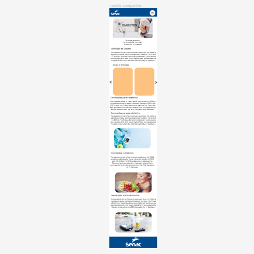
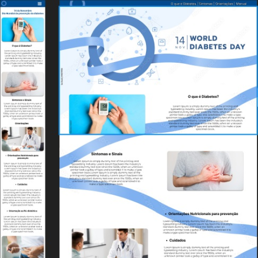
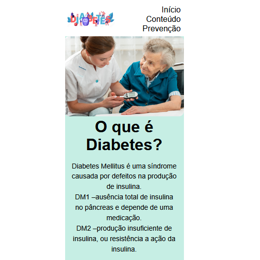
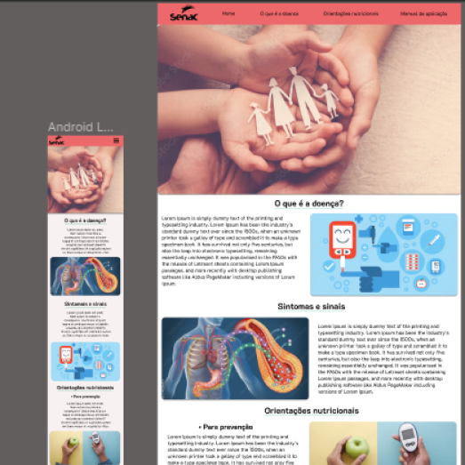

Campanha do Dia Mundial da Diabates
Senac Santos
Websites desenvolvidos pelos alunos da turma TI44 do Senac Santos

Alunos: Carol, Talita e Ruan

Alunos: Charles e Laelson

Alunos: Jean, Kevin e Lucas

Alunos: Alexandre e Leandro
Alunos: Diego e Rafael
Clique aqui para votar no site que você mais gostou